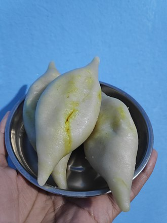

Bagiya Recipe

Ingredients:
- 2 cups rice flour
- 1 cup water
- 1/2 lb ground meat (chicken, lamb, or beef)
- 1 onion, finely chopped
- 2 tomatoes, chopped
- 1/2 cup green peas
- 2 green chilies, finely chopped
- 1/2 tsp turmeric powder
- 1/2 tsp cumin powder
- Salt to taste
- Oil for cooking
Procedures:
- Mix rice flour and water to make a smooth batter. Let it sit for 30 minutes.
- In a separate bowl, mix ground meat, onions, tomatoes, green peas, green chilies, turmeric powder, cumin powder, and salt.
- Heat oil in a pan and pour a ladle of batter to make a thin pancake.
- Spread the meat mixture on top of the pancake and cook until the bottom is golden brown.
- Flip the Bagiya and cook the other side until meat is cooked through.
- Repeat for the remaining batter and meat mixture.
- Serve hot and enjoy your delicious Bagiya!